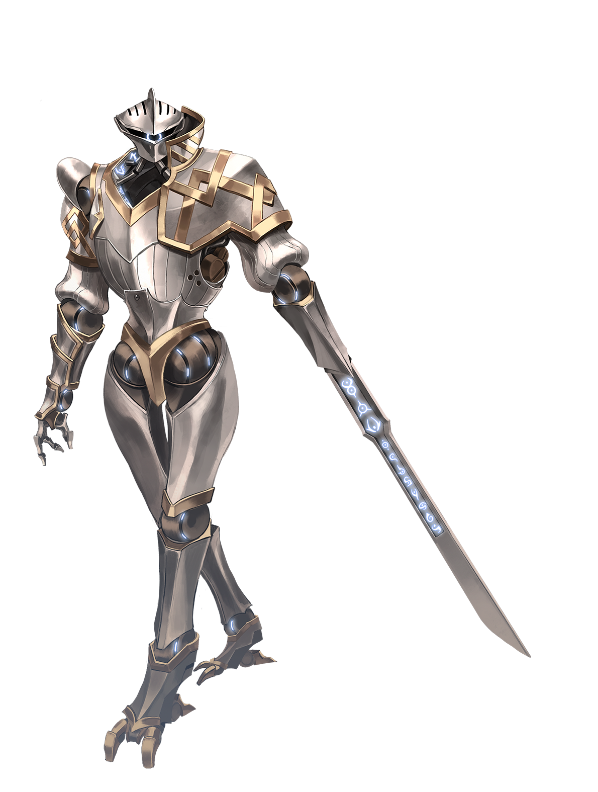
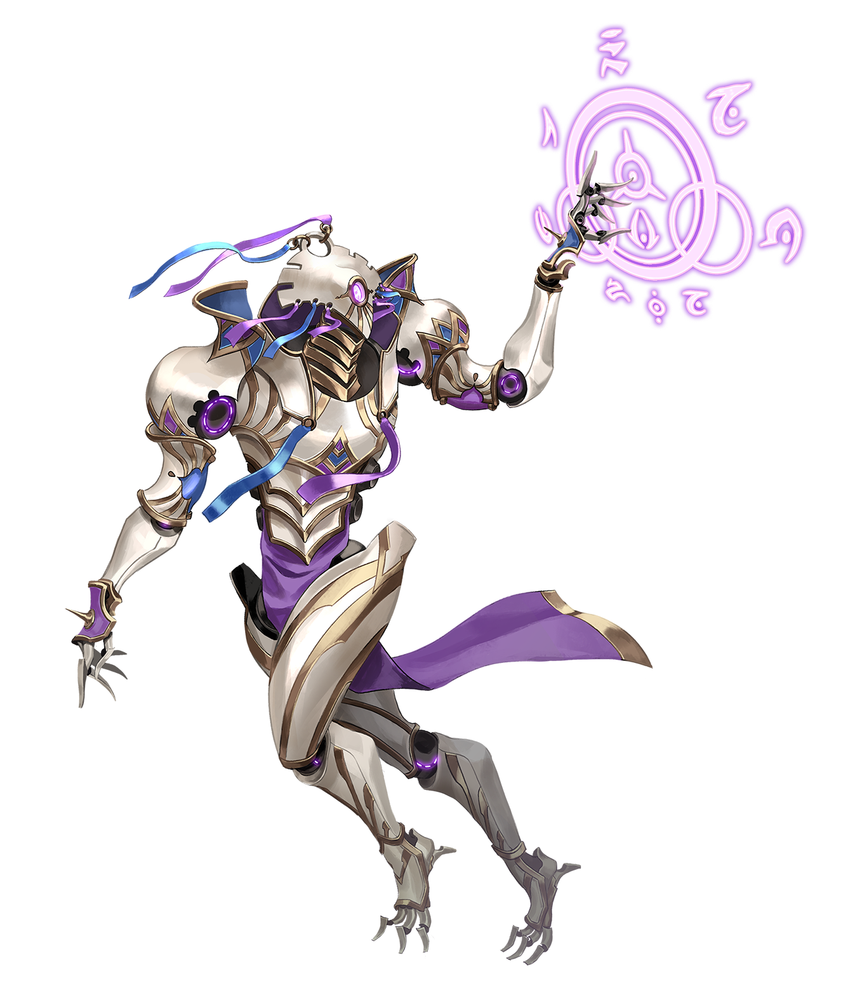

Archives of Nethys




Rare Automaton ConstructSource Guns & Gears pg. 37
These intelligent constructs house actual souls and represent what remains of a dying empire's last attempt at greatness. Automatons combine technological ingenuity with magical power, creating a blended being wholly unique to Golarion.
The Jistka Imperium was the first major human civilization to emerge after Earthfall, arising around the area that would later become Rahadoum and enduring for seven centuries thanks to great advancements in civics and the sciences. However, Jistka's leaders often favored aggressive uses of technology, and early advances paved the way for arrogance, petty infighting, and corruption. The Jistka Imperium's expansionist tendencies and lack of diplomacy earned the Imperium many enemies over the course of its existence. The most notable of these foes was the empire of Ancient Osirion. Osirion's enmity ultimately sealed the Imperium's fate, as they employed clever and depraved magic that proved more than a match for Jistka's legendary golem army, even when the Jistkans began to cut corners and bind fiends into their golems. In a desperate attempt to fight back against internal corruption and external pressures, a cabal of concerned Jistkans formed the Artificer Conclave to develop new technologies to stave off the Imperium's collapse and return Jistka to its former glory. The most successful of these developments were automatons, which the Conclave believed to be the pinnacle of Jistkan constructs—or at least, the last hope for Jistka's salvation. Conclave creators transplanted the mind, life force, and soul of Jistkan individuals into these constructs, creating magical and technological marvels powered by the life energy of the greatest warriors and scholars the organization could recruit. Unfortunately, despite the Conclave's best efforts, the automatons' arrival happened too late to save the already doomed Imperium. The empire collapsed, leaving automatons to fend for themselves.
The exceptional and forward-thinking construction of automatons means that a fair number remain today, millennia later, scattered to the winds. However, the passage of time has revealed one of automatons' greatest weaknesses: their mortal psyches. Only the strongest willed have managed to retain their memories, sense of self, and lucidity after all this time. As each automaton remains as unique as any living person on Golarion; a given automaton has their own personality, shaped by countless experiences. Most automatons behave reclusively, preferring to avoid others due to fear of attachment or misunderstanding. Even automatons who are more willing to live in the open understand that their unique nature makes them a prime target for hunters, scholars, or worse. Rare is the automaton that lives without the regular occurrence of distrust or worry.
If you want to play a character who is a living construct with powerful potential and ties to ancient magic, you should play an automaton.
You Might...
- Have lived for several centuries and through many significant events.
- Be hesitant to trust others until they've earned it.
- Remember little of your life before becoming an automaton.
Others Probably...
- Mistake you for a mindless construct when they first see you.
- Assume you have secret knowledge about magic and technology.
- Look upon you with awe.
Physical Description
Automatons share a common construction—a blend of magically treated metals and stone. This design allows automatons to withstand the rigors of direct combat and makes them particularly hardy. Their heavy bodies can move just as quickly as other combatants, making automatons intimidating foes. The design of an automaton varies depending on the needs of its role. Most automatons have a basic humanoid shape, though some instead have shapes that closely resemble animals. The majority of automatons have a single eye that glows with a dim, magical light. Each also contains a powerful artifact that both houses its individual soul and uses a combination of life and planar energy for power. These automaton cores are marvels of magical engineering whose method of creation has been lost to time.As constructs, automatons typically don't need to breathe, eat, or sleep; however, the body of an automaton needs to vent an imperceivable magical exhaust at a constant rate. This venting process requires breathable air to prevent a buildup of exhaust that can clog the automaton's systems, sometimes to fatal effect. Thus, automatons can still suffocate much like living creatures. Though they don't sleep, automatons require a period of magical recalibration and restoration which stabilizes the energies within their core. Without this process, an automaton core is incapable of fully powering the automaton and they enter an inefficient state (similar to a humanoid who doesn't get 8 hours of sleep).
Automatons don't age and the design of their cores grants them a seemingly endless power source. Many automatons that exist today are thousands of years old, their bodies as efficient as the day of their creation, even if their minds might have deteriorated with the strain of the ages. Automatons lost over time typically met violent ends. An automaton's body is just as vulnerable to destruction as any other construct, though destroying an automaton core is more difficult. As such, an automaton's soul might remain trapped within its core for years after the destruction of its body. This was the intent of the original creators, who hoped to provide functional immortality. However, in reality, the destruction of the body more often leads to a malfunction, requiring magical intervention such as resurrection magic to restore the automaton completely. In the case of the core's destruction, or if it malfunctions catastrophically enough that it can no longer hold the soul, the core releases the spirit to the River of Souls.
In some cases, an automaton can learn how to consciously or subconsciously influence its core. These automatons eventually learn how to release their souls from their cores, allowing their souls to move on when they feel they have achieved a satisfying life. This act leaves the automaton as a mindless construct, typically still active but no longer capable of anything but aimless wandering and occasional acts of self-defense.
Society
Due to the disparate fates of automatons, many of them lead solitary lives. There are a few cases of automatons originally designed to work together, such as groups of warriors, who remain as a team and dwell together in hideouts or travel together as wanderers. These groups are few and far between, however, and automaton settlements are even rarer. The only pockets of automatons that begin to resemble settlements typically hide among the ruins of Jistka. These groups can hold dozens of automatons, but any attempts to contact or visit them tend to be fruitless. Such gatherings are especially secretive, and the resident automatons will protect their homes at any cost.Automatons are far more likely to encounter other ancestries. Depending on the automaton's personality, this encounter could go a number of ways, ranging from extreme secrecy to open visitation. An automaton's unique appearance makes them stand out regardless of where they're found, but most others look upon them with awe or curiosity rather than fear. Magical constructs aren't an alien concept across Golarion, but many of them are mindless. After making it past the initial shock of a thinking construct, it's often not difficult for most grasp how to engage with an automaton. However, automatons are more likely to find the semblance of an everyday life in large cities like Absalom, Azir, or Quantium. Regardless of where they go, an automaton must remain on the lookout for those who would attempt to take their body for study or to access their core.
Beliefs
The people of the Jistka Imperium saw the aeons of Axis as ideal beings whose behavior was worthy of emulation. Since many automatons contain Jistkan souls, many automatons maintain a philosophy of order and attempt to avoid disrupting societies around them. Few automatons act particularly benevolent or maliciously, though the independence and isolation common among automatons occasionally leads to kind or cruel individuals. Automatons tend to worship gods of technology or magic like Brigh and Nethys, or various monitor demigods. Worship of Irori and Pharasma are somewhat common among automatons as well. Pharasmin automatons likely learn how to release their souls from their cores, and often choose to do so. Though they are ancient beings from long before the time of Casandalee, a small number of automatons have recognized the new artificial goddess as a kindred spirit.Popular Edicts dedicate yourself to your body’s purpose, help other automatons find release from their bodies when asked, minimize others’ sightings of you, travel to other planes
Popular Anathema allow others access to your core, use your body for massive destruction
Adventurers
Many who became automatons had some role in society prior to their transformation and often gravitate toward classes that best represent these roles, even if they no longer remember their former life as more than subconscious flashes. Hunter, sharpshooter, and warrior automatons usually become fighters, rangers, and rogues. Spell casting classes, such as bards, witches, and wizards are common among mage automatons. While an automaton can have any background, the pool of individuals chosen to become automatons were typically of the acolyte, bounty hunter, emissary, gladiator, guard, herbalist, hunter, martial disciple, scholar, scout, or warrior background.Names
An automaton typically keeps the name they had before their transformation into a construct, if they can remember it. Even when other memories fade, memory of their name often remains. As such, many automatons have names with Jistkan origins. Second most common are automatons who had to give themselves a new name, as they lost their memories of the old one at some point. Those automatons that particularly believed in the cause of the Artificer Conclave might instead take the name of one of the conclave's members in honor of the cause that they gave their body to support. Some automatons prefer to change their names over their lifetimes, either selecting a new name from a culture they encountered or adding a title to represent a significant moment in their lives. In some cases an automaton will use a particularly cherished title in place of any other name.Sample Names
Alnhaman, Busmin, The Doleful, Enoh, Himar, Kantral, The Kindred, Numinar, Scholar, Tehkis, Wayfarer, YulmianOther Information
Automaton Origins
The method of creating automatons as the Artificer Conclave did millennia ago has been lost to time. As such, most automatons who remain on Golarion were created during Jistka's existence. However, there are a few rare automatons that have different origins. Anquira, herself an automaton and a high-ranking member of the Artificer Conclave, resides in Axis and seems to be nearing the point of recreating the Jistkan process. She's created a few promising prototype automatons with her techniques. There are also rumors of another automaton doing similar research somewhere in the deserts of the Golden Road, though the new automatons emerging from the desert appear somewhat incomplete.Of significant note are the increased reports of automatons in southern Garund, originating from the nation of Eihlona. The nation is famous for its inhabitants' skill in mixing magic with technology, particularly the remnants of Shory technology that crashed within the nation's borders in ages past. Eihlonan mage crafters have managed to recreate automatons using their vast knowledge, magical prowess, and access to ancient technology, alongside insights from a few friendly automaton immigrants who found a respectful and welcoming home there. Though the process is long and arduous, Eihlona seems to be on the verge of recreating the success of the Artificer Conclave. If they do, they could someday produce hundreds, if not thousands of automatons.
Enhancements
Automatons are built to receive enhancements and modifications to their bodies. Many automaton ancestry feats have an “Enhancement” line that represents a possible augmentation you can acquire. You don't gain the benefits of the enhancement unless you take a feat that grants you those benefits, such as Lesser Augmentation. You can only gain the enhancements of a given feat once.Versatile Heritages
Since automatons have artificial bodies, they don’t manifest the features of versatile heritages, even if the soul within their core did so in life. As a result, most automatons don’t have a versatile heritage. However, players who are interested in taking a versatile heritage are encouraged to speak with their GM to best determine an explanation for the versatile heritage. Since an automaton core draws on planar energy, there is a chance that said energy manifests in a versatile heritage, such as a nephilim automaton with an overabundance of energy from the Outer Planes. Alternatively, a powerful soul might still be able to manifest the features of their heritage they had prior to transfer to an automaton body. An automaton with a versatile heritage will have minimal physical changes if any, though the color of energy that courses through their core and the rest of their body might change to properly represent the versatile heritage.Automaton Mechanics
Hit Points
8Size
Medium or SmallSpeed
25 feetAttribute Boosts
StrengthFree
Languages
CommonUtopian
Additional languages equal to your Intelligence modifier (if it's positive). Choose from Abyssal, Aquan, Auran, Celestial, Dwarven, Elven, Ignan, Infernal, Terran, and any other languages to which you have access (such as the languages prevalent in your region). At the GM's discretion, if you still have memories from your time in Jistka, you might speak Jistka instead of Common.
Low-Light Vision
You can see in dim light as though it were bright light, so you ignore the concealed condition due to dim light.Automaton Core
Your body contains an automaton core infused with planar quintessence that grants you power to perform various tasks and houses your soul and life energy. This life energy flows through you much like the blood of humanoids. As a result, you are a living creature. You don’t have the typical construct immunities, can be affected by effects that target a living creature, and can recover Hit Points normally via vitality energy. Additionally, you are not destroyed when reduced to 0 Hit Points. Instead, your life energy attempts to keep you active even in dire straits; you are knocked out and begin dying when reduced to 0 Hit Points.Constructed Body
Your physiological needs are different than those of living creatures. You don't need to eat or drink. You don't need to sleep, but you still need a daily period of rest. During this period of rest, you must enter a recuperating standby state for 2 hours, which is similar to sleeping except you are aware of your surroundings and don't take penalties for being unconscious. Much like with sleeping, if you go too long without entering your standby state, you become fatigued and can't recover until you enter standby for 2 hours.Shelyn's Corner
×Classic Feel
Classic Feel
Classic Feel
The classic look for the Archives of Nethys.
| Table |
| Data |
| More Data |
Book Feel
Book Feel
Book Feel
An alternative feel, based on the Rulebooks.
| Table |
| Data |
| More Data |
Round Feel
Round Feel
Round Feel
A rounded, modern look for the archives.
| Table |
| Data |
| More Data |
Slim Feel
Slim Feel
Slim Feel
A variant of the Round feel, more compact.
| Table |
| Data |
| More Data |